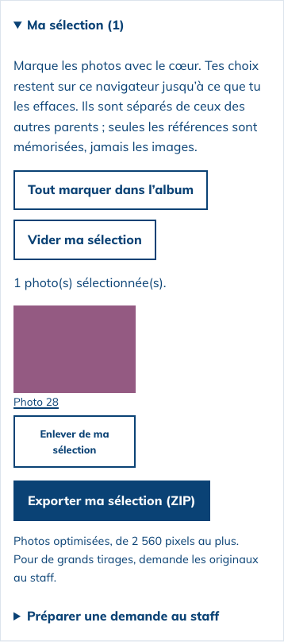

FICHE 9 · ANIMATEURS
Les souvenirs
choisis par les parents
Les familles gardent leurs choix et les transmettent au staff en quelques gestes.

- Le cœur marque une photo, dans la grille ou en grand. La visionneuse passe à la suivante sans recharger la page.
- Ma sélection rassemble les choix de tout l’album : tout marquer, enlever une photo ou exporter un ZIP.
- Le parent transmet sa sélection avec nom, e-mail et message. Aucun paiement n’est demandé.
- Ouvre Demandes des parents dans l’album pour répondre, exporter puis marquer la demande comme traitée.